Burst
Design version: 1.0.0, direction B · Reach. Burst accepted 2026-11-18 for release 1.0.0, with all thirteen recommendations in BURST.md.
Burst works as continuous shooting does on a dedicated camera: hold the shutter and photos are taken until it is let go; a tap takes one. The card shows a count and the rate this burst is really running at, and after the burst, the photos still being saved and a summary. Each frame is still one single-frame Bayer RAW photo saved on its own. This page is part of the plan for release 1.0.0. The saving buffer is not built until it has been measured on a device (decision 4), so the figures with a waiting row show a later option; burst-holding-no-buffer is the screen that is built. The interaction rules, the build specification, the strings and the owner’s decisions are in BURST.md.
- No promised rates. The iPhone gives an app no burst mode for RAW, and the rate has not been measured. The card shows what was measured in the burst that is running, and Slow is a ceiling the app can keep, never a claim about speed.
- Holding is never the only way. Start Burst runs a burst without holding, on the card, as a VoiceOver action, and by name for Voice Control and Switch Control.
- Nothing blinks. The picture stays live, and each photo is marked by the count, a light tap and the system’s shutter sound. A flash of the screen several times a second is not used.
- Nothing is dropped. Every photo taken is saved, whatever stops the burst.
- The places are the accepted ones: the drive strip’s word and its menu, the mode card on the picture’s lower edge, the shutter.
What changes from the Burst drawn in Drive modes. There, one tap starts a burst and the next tap stops it, and the card appears only while it runs. Here a tap takes one photo, holding takes a burst, and tap-to-start is kept as Start Burst. The four earlier figures (drive-burst, drive-burst-running, ipad-burst, ipad-burst-running) are replaced by this page.
What each input does in Burst
| Input | Result | Without holding |
|---|---|---|
| Tap the shutter | One photo. | The same. |
| Press and hold the shutter | The first photo is taken as the finger goes down. Photos follow while it stays down, and stop when it lifts or slides off. | Start Burst on the card; the shutter or Stop Burst ends it. |
| Start Burst (card) | A burst that runs without holding, until the shutter or Stop Burst is pressed, or a limit is reached. | It is the other way. |
| Volume buttons, Camera Control | As the shutter: a short press takes one photo, holding takes photos until release. This is today’s behavior. | Start Burst. |
| Space bar | One photo. While a burst runs, Space stops it. | Start Burst has keyboard focus in its turn. |
| VoiceOver | Double tap: one photo. Double tap and hold: photos until the finger lifts. The action Start Burst: a burst until the next double tap. | Start Burst is also the button on the card. |
| Switch Control, Voice Control | Selecting or saying Take Photo: one photo. Start Burst and Stop Burst are buttons with those names. | No holding is needed. |
| Apple Watch | One photo for each tap, as today. The watch does not start a burst. | |
| Siri and Shortcuts, Number of Photos | A burst of exactly that many photos, at the Fast speed, as today. |
Speed
The selected word on the strip opens its options, as Timer does. The speed is not stored: each launch starts at Fast, as each launch starts in Single.
| Speed | What it does | What it can claim |
|---|---|---|
| Fast (the default) | Each photo is taken as soon as the camera is ready for it. This is today’s behavior. | Whatever the camera and the saving allow. The card shows the measured figure during and after the burst. |
| Slow | The same, with at least half a second between the starts of two photos. | Never more than 2 a second; fewer if the camera needs longer. |
What the iPhone can do
| Fact | Evidence | Notes |
|---|---|---|
| Each frame is one single-frame Bayer RAW photo, saved as its own photo | In the code today and covered by tests | No frame is merged with another. Metadata allowlist, read-back and signing apply to each file. |
| The camera has no burst mode for RAW that the app could switch on | From Apple’s documentation | A burst is separate photo requests, each sent when the photo output reports it is ready. The rate is the camera’s, not a setting. |
| Frames a second | Not measured | docs/TESTING.md, “Burst rate”, is empty. No figure in this design is a measurement; the numbers in the drawings are samples. Expect a few photos a second at 12 MP and about one a second or fewer at 48 MP: an assumption until measured on each lens. |
| The picture stays live between photos | Expected; check on a device | The preview is a separate output from the photo. A short stutter at each RAW photo is possible; record what is seen. |
| Focus and exposure between photos | Expected; check on a device | In full auto the camera keeps adjusting both between photos. With AE/AF lock or manual values, every photo uses them. |
| Saving keeps up, or falls behind | Not measured | Today one photo is saved while the next is taken, so a burst runs at the slower of the two. Whether a deeper buffer helps depends on that measurement (decision 4). |
| The system’s shutter sound for each photo | System behavior; check on a device | The sound follows the system and the region. The app adds no sound. |
The card, state by state
| State | Title | Detail | Button |
|---|---|---|---|
| Idle | “Fast burst” or “Slow burst: up to 2 a second” | “Hold the shutter. A tap takes one photo.” | Start Burst |
| Shutter held | “Photos taken: 12” | The measured rate from the third photo on, then “Release to stop” | none |
| Started with Start Burst | “Photos taken: 12” | The measured rate | Stop Burst |
| Saving is behind | “Photos taken: 23” | The rate, then “Slower while photos save” | as above |
| Released, still saving | “Saving: 9 of 12 photos saved” | A progress bar | none; the shutter is dimmed |
| Summary (two photos or more) | “12 photos saved” | The time from the first photo to the last, and the rate | none; stays until the next action |
| Stopped by itself | Today’s sentence: the limit, storage, or the camera stopped | The time and rate, or the photos saved | none |
The second row of the card shows the photos waiting to be saved, as marks and as words (“Waiting to save: 3 of 8”), only if the saving buffer is built (decision 4). Sample values throughout.
Screens
Idle and the speed
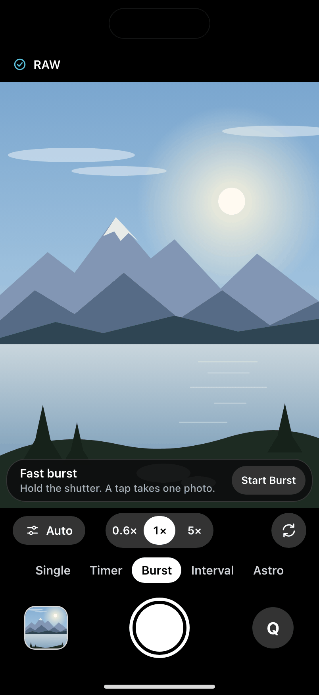
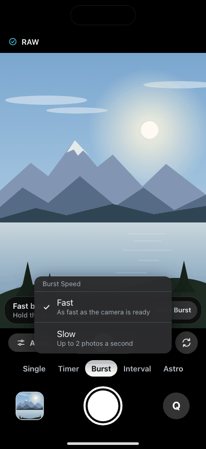
Shooting
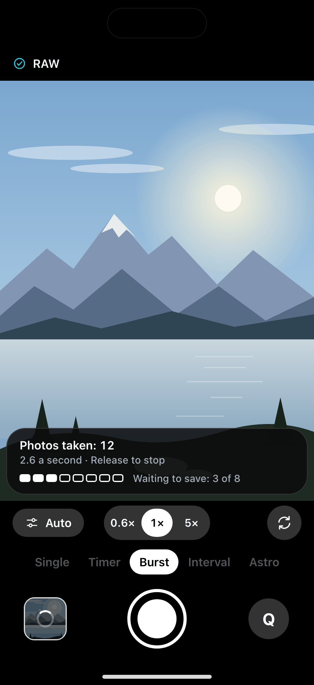
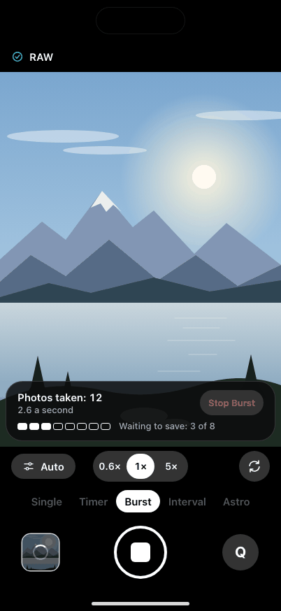
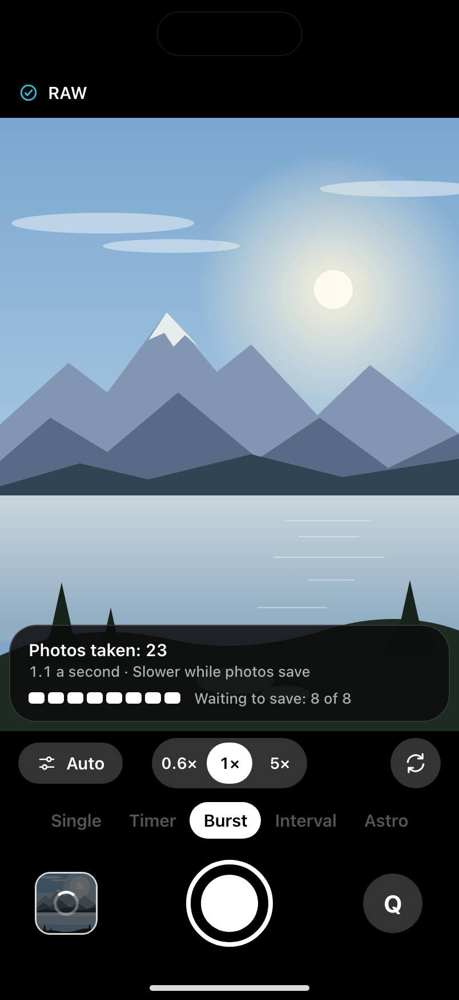
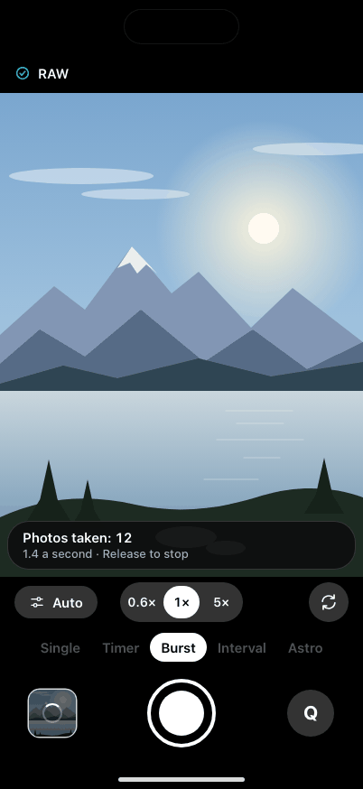
Released
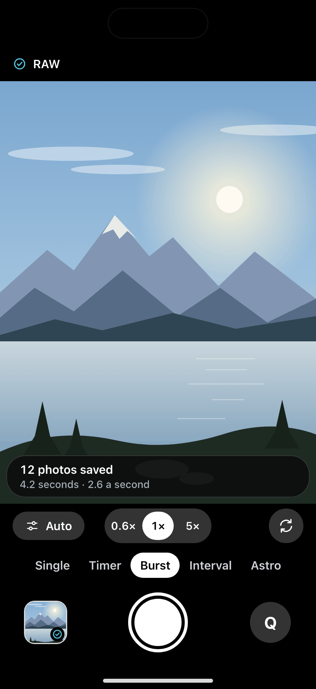
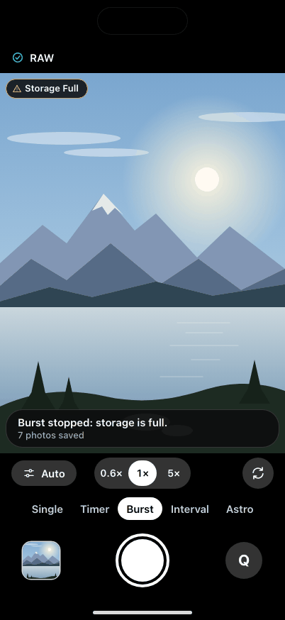
VoiceOver, night mode, largest text size, right to left, small iPhone
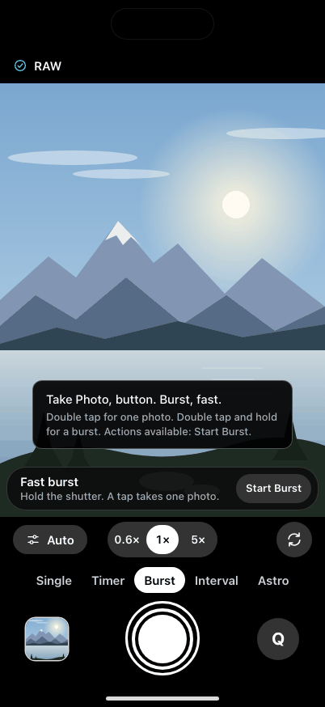
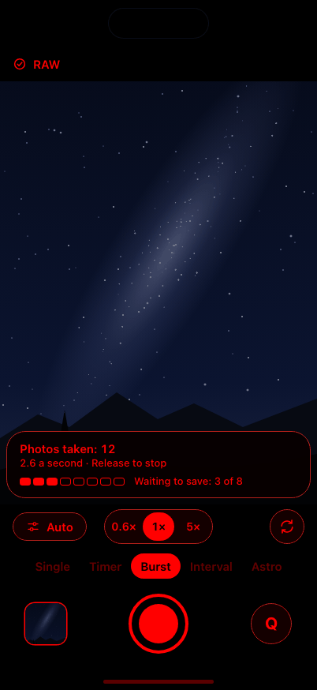
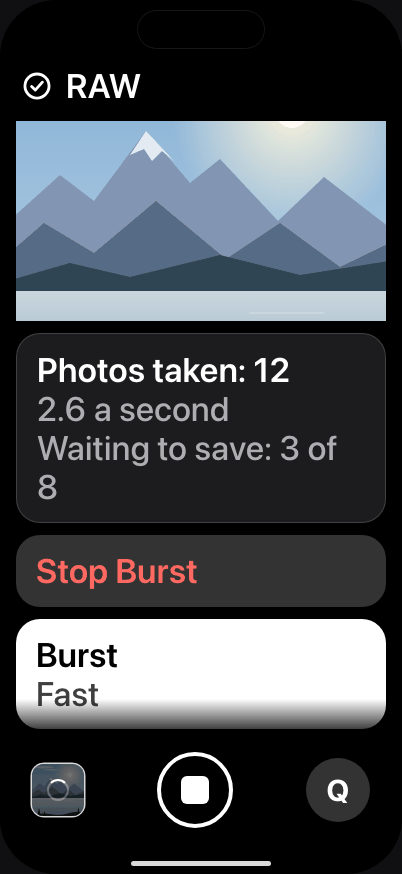
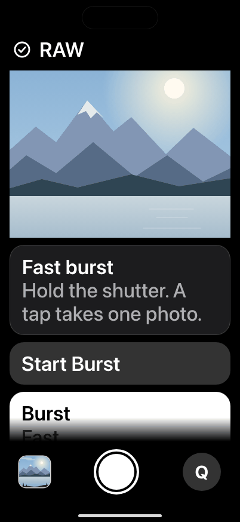
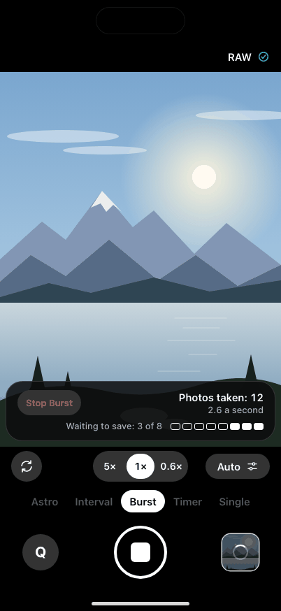
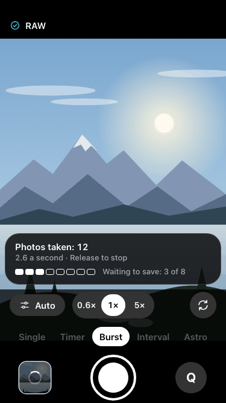
Sideways
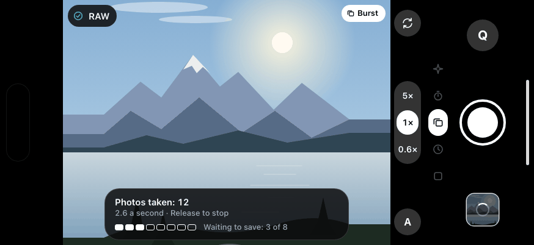
iPad
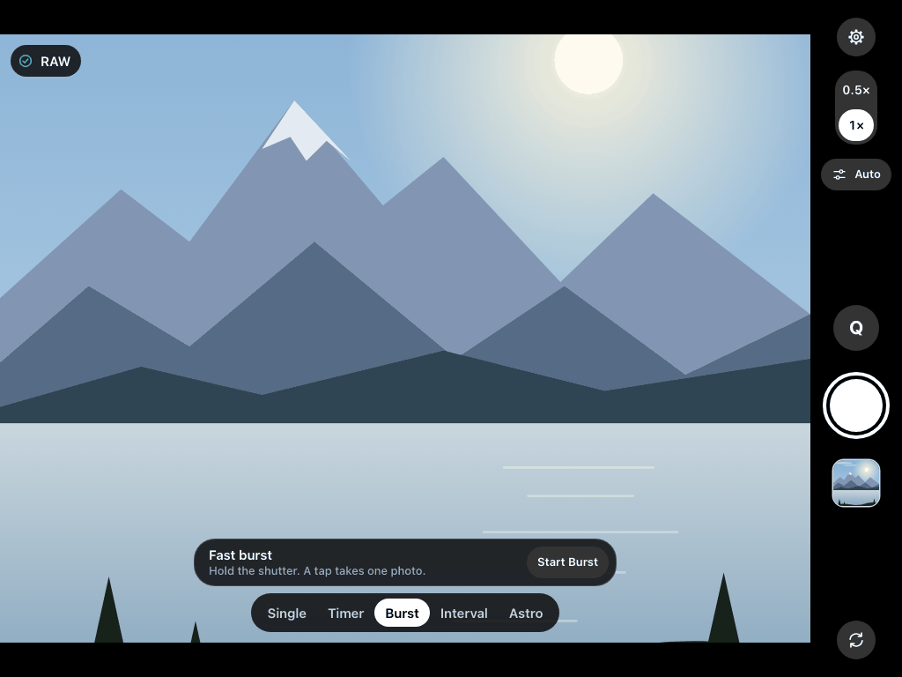
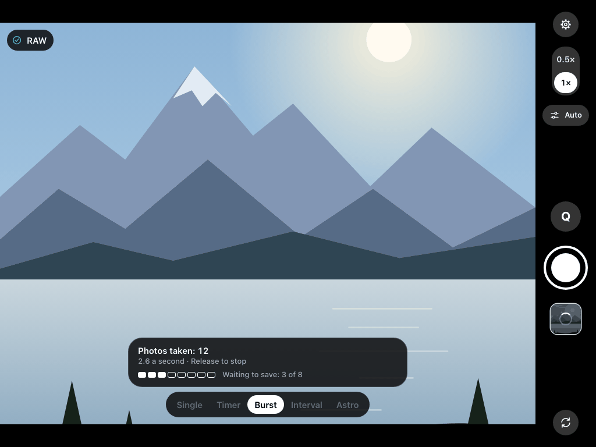
What stays as it is
- Apple Watch: the remote takes one photo for each tap and shows “The camera was busy” during a burst. No watch screen changes.
- Siri and Shortcuts: Take Photo with Number of Photos takes exactly that many, at the Fast speed, and Siri reports the result. No summary card is added for it beyond today’s behavior.
- The Live Activity: “Photos taken: 12” while a burst runs and “Saving: 8 of 12 photos saved” after leaving the app.
- No flash in a burst, the limit of 50 photos, the storage check before each photo, and the Last Photo viewer, where each photo of a burst is a page.